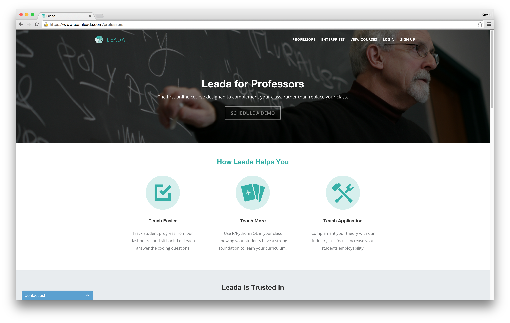
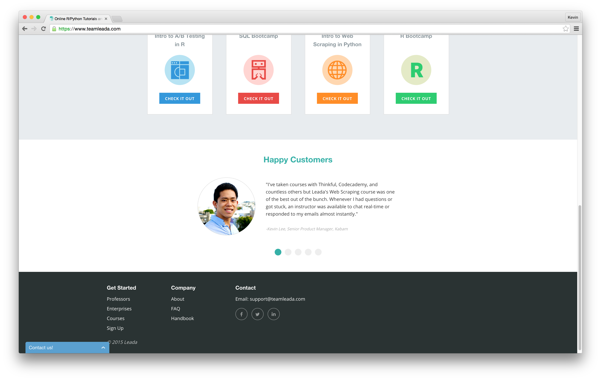
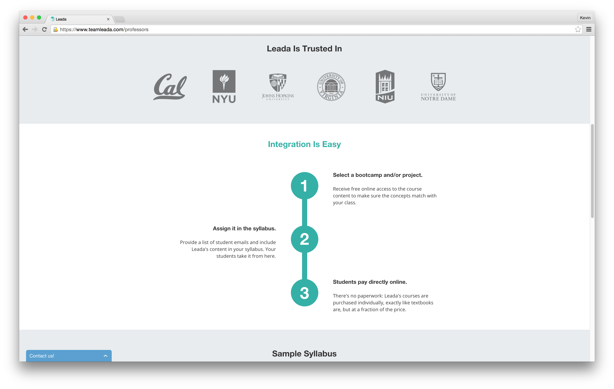
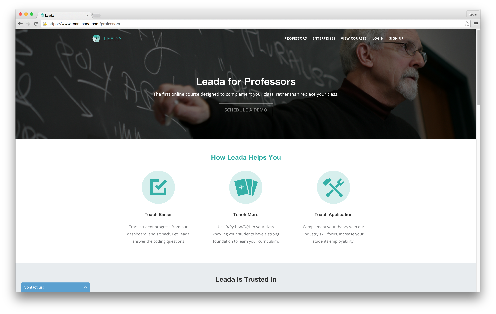
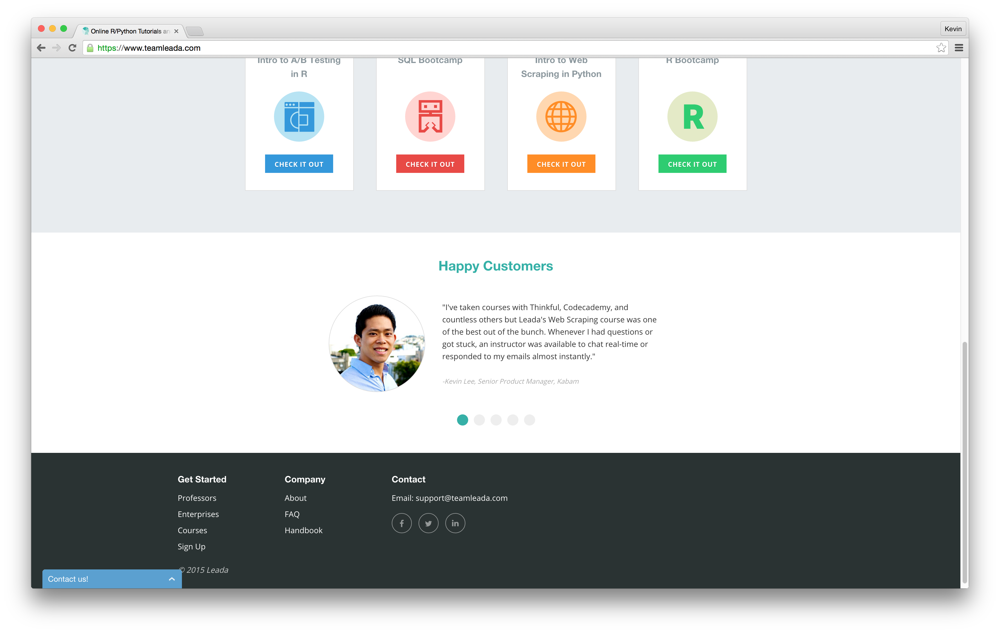
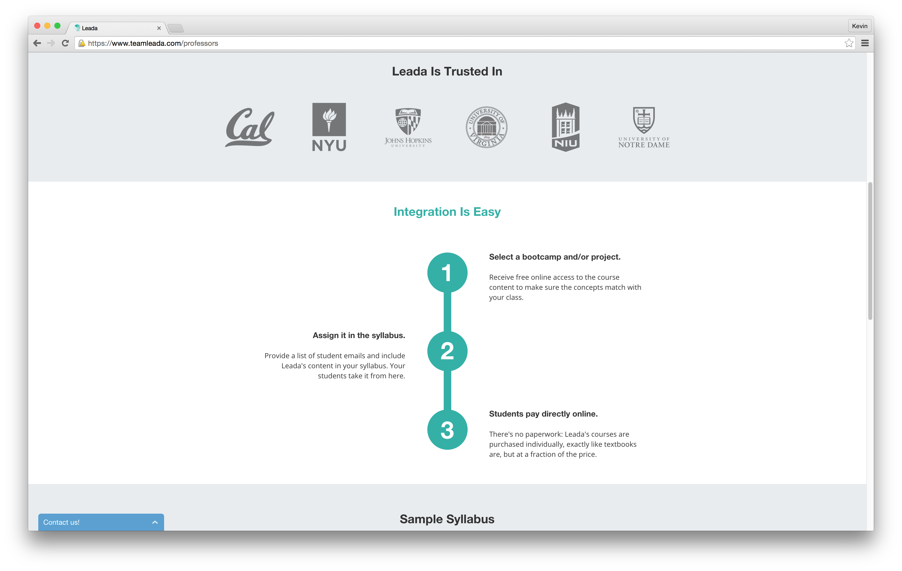

Leada
Website Redesign
When I designed a new website for Leada, I had to think about how enterprise-focused websites function versus how consumer-focused websites function. The conclusion that I came to was that while consumer-focused websites want to draw attention and be unique, an enterprise-focused website is more about not drawing attention or being unique the wrong way. In other words, you could say consumer-focused websites are about what you do right, whereas enterprise-focused websites are about what you don't do wrong.
 





With this in mind, I rebuilt Leada with mellow colors and an intuitive, simple layout. I displayed the information on the most important pages, the Professors and Enterprises pages, as clearly and simply as possible. There was an extensive use of flat, pastel colors, simple humanist typography, and no fancy effects.
Leada was an interesting exercise in creating an unassuming, yet professional and impressive company website and course portal.